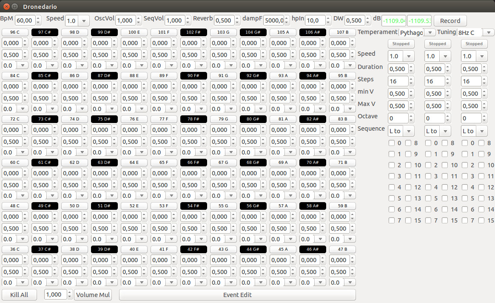

Dronedario Manual
What it is
Dronedario is a realtime audio program to create drone textures.
Developed by Triceratupuz Lab
Key features
- Wxpython interface and cSound audio engine
- Tuning can be selected between 8 Hz (432 Hz A) and 440 Hz A
- Intonation can be selected between Pythagorean (lower active oscillator set the base frequency, all the other are expressed as simple fraction ratios) and Equally tempered (fixed semitone frequency ratio).
- Oscillators use Split Synthesis conceived by Prof. Maurizio Giri (to create an almost controllable rhythmic frequency beating).
- Step sequencers with percussive sound to arpeggiate between selected notes (active oscillators)
- A commandline to control groups of oscillators

Index
License